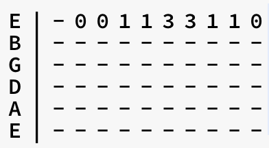
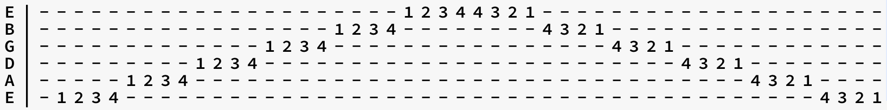
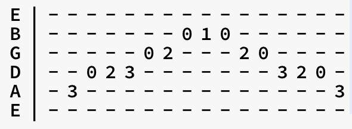
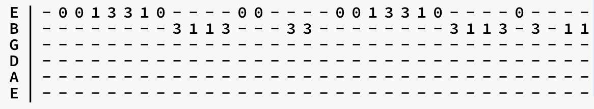
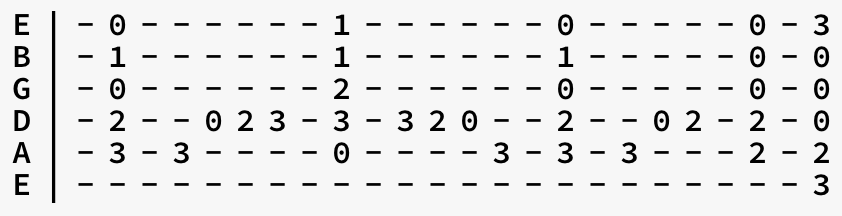

Let's work on some exercises!
Exercise 1
To get your fingers used to pressing down on the frets,
play this basic exercise.
>
Once you've got it down for the high E string, try
this exercise with all 6 strings!
Exercise 2
This next exercise will give you a better understanding
of the 6 strings and get all 4 fingers playing!
>
Try doing this by picking down on all notes, and then try
alternating up and down! Alternating down and up with your pick allows for faster
playing!
Exercise 3
Now let's try playing a basic scale! This next exercise
is the C major scale!

Exercise 4
Tabs are a quick way to learn popular songs, try playing
the classic song, "Ode to Joy"!
>
Time for a more challenging exercise!
Exercise 5
This exercise involves adding chords to your normal playing!
It is recommended that you check out the chords page before
working on this exercise!
>
If you are struggling with this exercise, work on chords C,
F, Em, and G from the chords page!